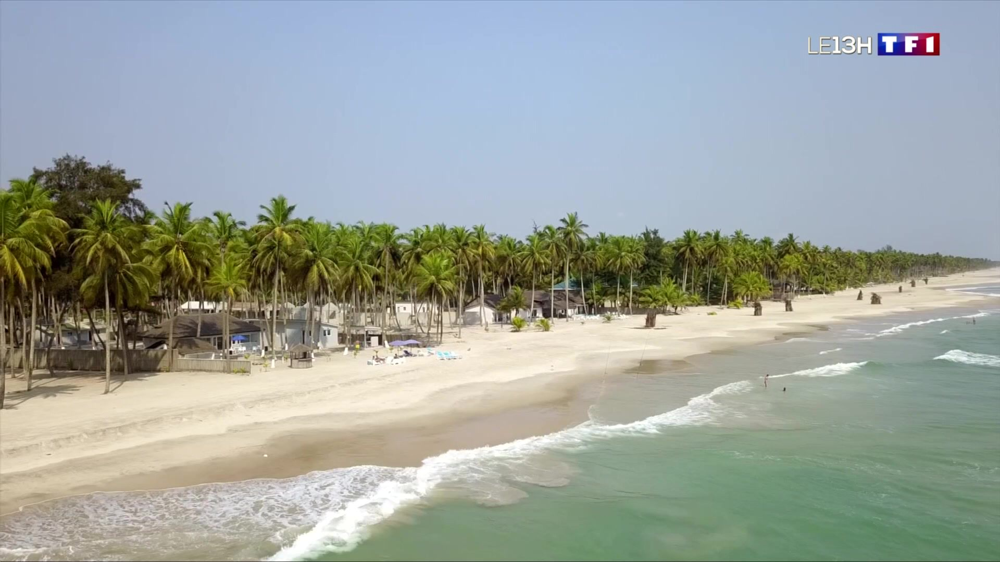
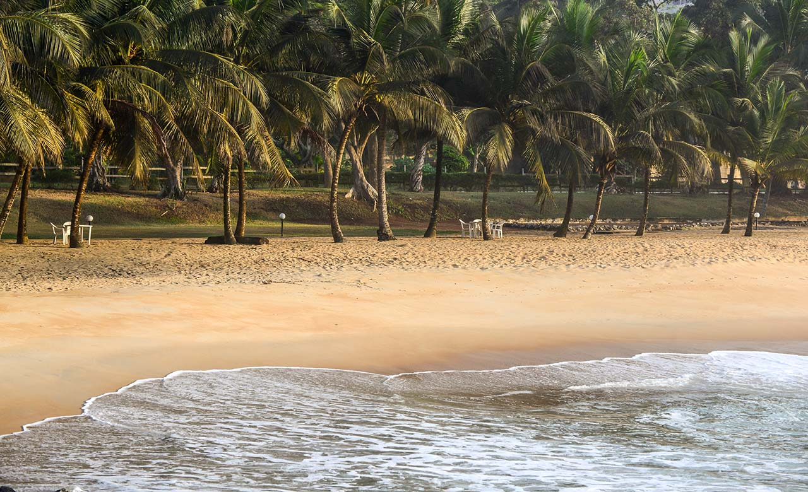

ABIDJAN

Ivoirian economic capital, Abidjan is the most populous city in French-speaking West Africa, and the second largest city and third largest agglomeration in the French-speaking world. Considered as the cultural crossroads of West Africa, Abidjan is experiencing strong growth, characterized by rapid industrialization and urbanization.
Découvrir le District de Abidjan
YAMOUSSOKRO

The political capital of Ivory Coast, Yamoussokro is home to the basilica of Notre-Dame-De_La-Paix. It is one of the largest Catholic churches in the world, and the second highest Christian building in the world behind the main church in Ulm.
Visiter la Basilique Notre-Dame de la Paix
ASSINIE

Assinie, or officially known as Assinie-Mafia, is a seaside town in southeastern of Ivoiry Coast. Assinie is a call to decompression. Brimming with sunshine, coconut palms and beautiful beaches with the sea on one side and lagoon on the other, Assinie is the place to be for beach tourism. Here, salt and fresh water offer a chic and popular, wild and domesticated double face. On one side, the fishing village welcomes you with shy charm and invigorating calm. On the other side, the luxurious villas of the local bourgeoisie.
Visiter Assinie
SAN-PEDRO

San-Pedro is a large city on the southwest coast of Ivory Coast.It is the fifth most populous city in the country and the second most important economic region in Ivoiry Coast behind Abidjan, thanks to its port and industrial zones. The port of San-Pedro is the world's leading port for cocoa bean exports. More than half of Ivoiry Coast's cocoa crop passes through here. In addition to its economical appeal, San-Pedro remains one of the most popular tourist areas. There are many beautiful beaches in the city and surrounding towns, such as Monogaga and Grand-Béréby, which are highly popular tourist destination.
BOUAKE

Bouake, a town in Ivory Coast, is a major commercial crossroads between Mali and Burkina Faso on the one hand, and Abidjan and the lower coast on the other; It is linked to the capital by a tarmac road and a railroad. Thanks to the transit of kola nuts, dried fish and cattle, it is one of the strong point of Dioula trade. It's also a hub for tens of thousands of Malian migrants. Its regional role is no less important: on the one hand, its own food needs stimulate production in the surrounding countryside; on the other, it's a magnet for many young rural people who come here to pursue their studies.
En savoir plus sur Bouake